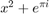

Contents
function [fitObjs, ix, iy, iData] = ... plotseries(dc, ix, iy, iData, iSubplots, gridSize)
parse arguments
if(~exist('ix','var')); [ix, iy, iData, iSubplots]=parsearguments(dc); elseif(~exist('iy','var')); [ix, iy, iData, iSubplots]=parsearguments(dc, ix); elseif(~exist('iData','var')); [ix, iy, iData, iSubplots]=parsearguments(dc, ix, iy); elseif(~exist('iSubplots','var')); [ix, iy, iData, iSubplots]=parsearguments(dc, ix, iy, iData); else; [ix, iy, iData, iSubplots]=parsearguments(dc, ix, iy, iData, iSubplots); end if(~exist('gridSize','var')); gridSize=[1,1]; end
Not enough input arguments.
Error in plotseries (line 4)
if(~exist('ix','var')); [ix, iy, iData, iSubplots]=parsearguments(dc);
plot
nPlots=length(iData);
fitObjs={};
figure;
s=1; e=1;
for i=2:nPlots+1
if(i==nPlots+1 || ~isequal(iSubplots{i}, iSubplots{i-1}))
fitObjs=cat(1,fitObjs,...
plotsubplot1(dc, ix(s:e), iy(s:e), iData(s:e), iSubplots{e}, gridSize));
s=i; e=i;
else
e=e+1;
end
end
end function [fitObjs] = plotsubplot1(dc, ix, iy, iData, iSubplot, gridSize)
nPlots=length(ix);
setup fit
leglines=4;
fitType='poly1';
fitNCoeffs=2;
fitObjs=cell(nPlots, 1);
fitCoeffs=zeros(nPlots,fitNCoeffs);
fitConfInts=zeros(nPlots,fitNCoeffs, 2);
leg=strings(nPlots*leglines, 1);
setup styles
lineStyles={'none', 'none', 'none', 'none'};
lineWidths={2, 2, 2, 2};
colors={'k', 'r', 'b', 'g', 'c', 'm', 'y', 'w'};
markers={'.', '+', 'x', '^', 'v', 'x', 'd', '^', 'v', '>', '<', 'p', 'h', 's'};
markerSizes={25, 10, 8, 8, 8, 8, 8, 8, 8, 8, 8, 8, 8};
markerEdgeColors={'k', 'r', 'b', 'g', 'c', 'm', 'y', 'w'};
markerFaceColors={'k', 'r', 'b', 'g', 'c', 'm', 'y', 'w'};
fitLineStyles={'--', ':', '-.', '-'};
fitLineWidths={2, 2, 2, 2};
fitLineJoins={'round', 'round', 'round'};
format='%+5.3f';
formaterr='%5.3f';
make new space
subplot1=subplot(gridSize(1), gridSize(2), iSubplot);
subplot1.XScale='linear';
subplot1.YScale='linear';
subplot1.GridLineStyle='-';
%subplot1....
hold on;
grid on;
for iPlot=1:nPlots iDatum=iData(iPlot); X=dc.data{iDatum}(:,ix(iPlot)); Y=dc.data{iDatum}(:,iy(iPlot)); % sort s = [X Y]; s = sortrows(s,1); X = s(:, 1); Y = s(:, 2); % plot1 plot1 = plot(X, Y); set(plot1, 'LineStyle', getcircled(lineStyles, iPlot)); set(plot1, 'LineWidth', getcircled(lineWidths, iPlot)); set(plot1, 'Color', getcircled(colors, iPlot)); set(plot1, 'Marker', getcircled(markers, iPlot)); set(plot1, 'MarkerSize', getcircled(markerSizes, iPlot)); set(plot1, 'MarkerEdgeColor', getcircled(markerEdgeColors, iPlot)); set(plot1, 'MarkerFaceColor', getcircled(markerFaceColors, iPlot)); % fit1 fitObjs{iPlot}=fit(X, Y, fitType); fit1Plot=plot(fitObjs{iPlot}); fitCoeffs(iPlot, :)=coeffvalues(fitObjs{iPlot}); %#ok<*SAGROW> fitConfInts(iPlot, :, :) = confint(fitObjs{iPlot})'; set(fit1Plot, 'LineStyle', getcircled(fitLineStyles, iPlot)); set(fit1Plot, 'LineWidth', getcircled(fitLineWidths, iPlot)); set(fit1Plot, 'LineJoin', getcircled(fitLineJoins, iPlot)); set(fit1Plot, 'Color', getcircled(colors, iPlot)); leg(leglines*(iPlot-1)+1)=dc.names{iDatum}; leg(leglines*(iPlot-1)+2)='linear fit a*x+b:'; leg(leglines*(iPlot-1)+3)=['a = ' num2str(fitCoeffs(iPlot, 1), format)... '±' num2str(abs(fitConfInts(iPlot,1,1)-fitConfInts(iPlot,1,2))/2, formaterr)]; leg(leglines*(iPlot-1)+4)=['b = ' num2str(fitCoeffs(iPlot, 2), format)... '±' num2str(abs(fitConfInts(iPlot,2,1)-fitConfInts(iPlot,2,2))/2, formaterr)]; for iter=1:leglines-2 plotx=plot(X(1), Y(1)); plotx.Marker='none'; plotx.LineStyle='none'; end end
legend
l=legend(leg, 'FontSize', 10, 'TextColor', 'black'); l.TextColor='k'; l.Color = 'w'; l.Box = 'on'; l.EdgeColor = [0.15 0.15 0.15]; l.LineWidth = 0.5; l.Location ='best';
final
iDatum=iData(1);
title(['Dependence of ' dc.colNames{iDatum}{iy(1)} ' on ' dc.colNames{iDatum}{ix(1)}]);
xlabel([dc.colNames{iDatum}{ix(1)} ' [' dc.colUnits{iDatum}{ix(1)} ']']);
ylabel([dc.colNames{iDatum}{iy(1)} ' [' dc.colUnits{iDatum}{iy(1)} ']']);
hold off;
end
support functions
function [ixRes, iyRes, iDataRes, iSubplotsRes] = parsearguments(dc, ix, iy, iData, iSubplots)
if(exist('ix','var')); nClauses=length(ix); else; nClauses=1; end
- ITEM1
- ITEM2

MONOSPACED TEXT
if(~exist('ix','var')); ix=cell(1, nClauses); ix(:)={1}; end if(~exist('iy','var')); iy=cell(1, nClauses); iy(:)={2}; end if(~exist('iData','var')); iData=cell(1, nClauses); iData(:)={'.'}; end if(~exist('iSubplots','var')); iSubplots=cell(1, nClauses); iSubplots(:)={1}; end ixRes=[]; iyRes=[]; iDataRes=[]; iSubplotsRes={}; for i=1:nClauses iDataClause=iData{i}; if(~isa(iDataClause, 'double')) iDataClause=getmatchnums(dc.names, iDataClause); end for k=1:length(iDataClause) iDatum=iDataClause(k); ixClause=ix{i}; iyClause=iy{i}; if(~isa(ixClause, 'double')) ixClause=getmatchnums(dc.colNames{iDatum}, ixClause); end if(~isa(iyClause, 'double')) iyClause=getmatchnums(dc.colNames{iDatum}, iyClause); end [X, Y]=meshgrid(ixClause, iyClause); ixRes=cat(1, ixRes, X(:)); iyRes=cat(1, iyRes, Y(:)); iDataRes=cat(1, iDataRes, zeros(length(X),1)+iDatum); iSubplotsRes=cat(1, iSubplotsRes, cell(length(X),1)); iSubplotsRes(end-length(X)+1:end)=iSubplots(i); end end
end function [res] = getmatchnums(arr, expression) matches=regexp(arr, expression, 'once'); k=1; for i=1:length(matches) if(~isempty(matches{i})) res(k)=i; %#ok k=k+1; end end end function [res] = getcircled(cellarr, k) s = length(cellarr); ind = mod(k, s); if ind==0 ind=s; end res=cellarr{ind}; end